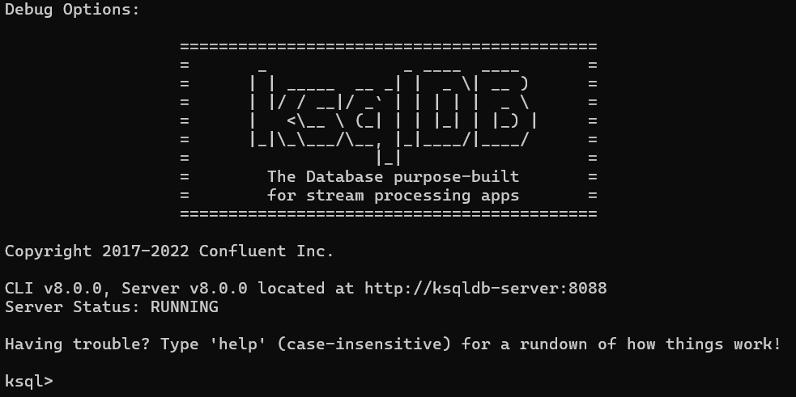
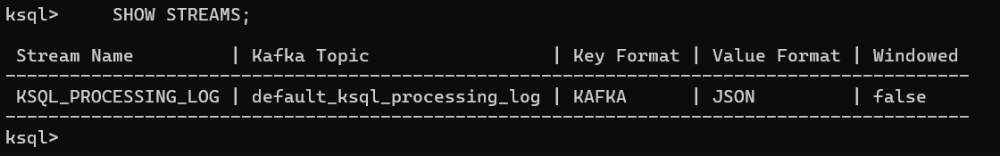
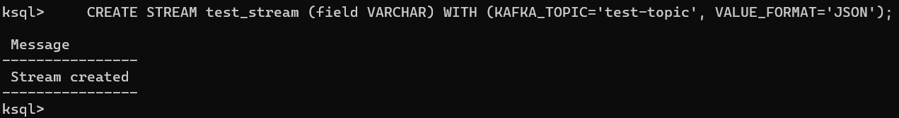
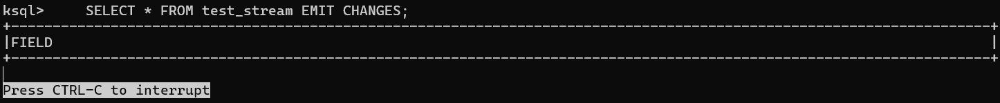
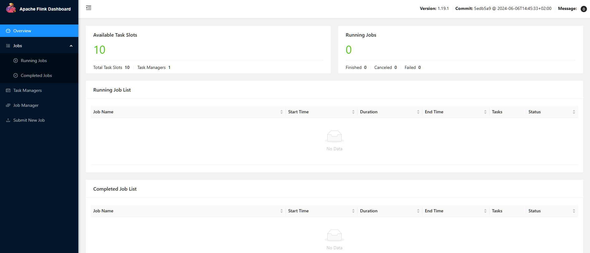
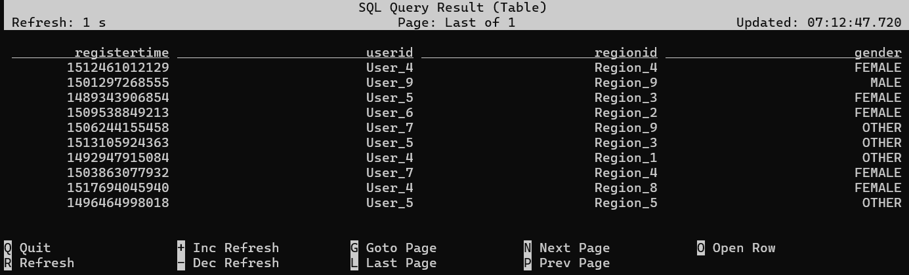

Esta guía proporciona instrucciones detalladas para instalar y desplegar Apache Kafka en un contenedor Docker, asegurando compatibilidad en todas las plataformas (Linux, macOS, Windows, incluyendo WSL).
Antes de comenzar, asegúrate de lo siguiente:
Puedes utilizar el script de
docker_install.shde la carpeta/resourcespara instalar ambas cosas en WSL/Ubuntu.
Desde 2023, Kafka soporta el modo KRaft (Kafka Raft Metadata mode). El método recomendado es usar el repositorio oficial de Confluent:
https://github.com/confluentinc/cp-all-in-one
git clone https://github.com/confluentinc/cp-all-in-one.git
cd cp-all-in-one/cp-all-in-one-community
docker compose up -d
Esto desplegará:
Puedes editar el docker-compose.yml para quitar servicios que no necesites.
bash
docker compose logs kafka
docker compose logs schema-registry
docker-compose.yml si solo necesitas Kafka puro.| Servicio | Imagen Docker | Propósito principal | Puerto(s) principales |
|---|---|---|---|
| broker | confluentinc/cp-kafka | Broker de Kafka: gestiona topics, mensajes, particiones, etc. | 9092, 9101 |
| schema-registry | confluentinc/cp-schema-registry | Gestión de esquemas Avro/JSON/Protobuf para los mensajes de Kafka. | 8081 |
| connect | cnfldemos/kafka-connect-datagen | Integración de Kafka con sistemas externos (bases de datos, ficheros, etc.) y generación de datos demo. | 8083 |
| rest-proxy | confluentinc/cp-kafka-rest | API REST para interactuar con Kafka sin necesidad de librerías Java. | 8082 |
| ksqldb-server | confluentinc/cp-ksqldb-server | Motor de SQL streaming sobre Kafka (KSQL). | 8088 |
| ksqldb-cli | confluentinc/cp-ksqldb-cli | CLI para interactuar con ksqlDB Server. | - |
| ksql-datagen | confluentinc/ksqldb-examples | Generador de datos de ejemplo para pruebas en ksqlDB. | - |
| flink-jobmanager | cnfldemos/flink-kafka | Apache Flink: procesamiento de streams y batch en tiempo real. | 8081, 9081, 6123 |
| flink-taskmanager | cnfldemos/flink-kafka | Ejecuta tareas de Flink (workers). | 8081, 6123 |
| flink-sql-client | cnfldemos/flink-sql-client-kafka | CLI para ejecutar consultas SQL sobre Flink. | 8081, 6123 |
confluentinc/cp-kafkaCrear un topic:
bash
sudo docker compose exec broker kafka-topics --create \
--bootstrap-server localhost:9092 \
--topic test-topic \
--partitions 1 \
--replication-factor 1
bash
Created topic test-topic.
Listar topics:
bash
sudo docker compose exec broker kafka-topics --list --bootstrap-server localhost:9092
bash
test-topic
Producir mensajes (CLI):
bash
sudo docker compose exec -it broker kafka-console-producer \
--bootstrap-server localhost:9092 \
--topic test-topic
Consumir mensajes (CLI):
bash
sudo docker compose exec -it broker kafka-console-consumer \
--bootstrap-server localhost:9092 \
--topic test-topic \
--from-beginning
Ver detalles de un topic:
bash
sudo docker compose exec broker kafka-topics --describe \
--bootstrap-server localhost:9092 \
--topic test-topic
Eliminar un topic:
bash
sudo docker compose exec broker kafka-topics --delete \
--bootstrap-server localhost:9092 \
--topic test-topic
Ver mensajes en un topic (sin consumirlos):
bash
sudo docker compose exec -T broker kafka-console-consumer \
--bootstrap-server localhost:9092 \
--topic test-topic \
--from-beginning
confluentinc/cp-schema-registryEjemplo: Registrar un esquema Avro (usando curl):
bash
curl -X POST -H "Content-Type: application/vnd.schemaregistry.v1+json" \
--data '{"schema": "{\"type\":\"string\"}"}' \
http://localhost:8081/subjects/test-topic-value/versions
Consultar esquemas:
bash
curl http://localhost:8081/subjects
json
{
"id": 1
}
Esto devuelve el ID del esquema recién creado.
Consultar versiones de un esquema (después de varios registros):
bash
curl http://localhost:8081/subjects/test-topic-value/versions
json
[1, 2, 3]
Muestra un array con los números de versión del esquema para el subject especificado. Cada número corresponde a una versión distinta del esquema.
Obtener un esquema específico:
bash
curl http://localhost:8081/subjects/test-topic-value/versions/1
json
{
"subject": "test-topic-value",
"version": 1,
"id": 1,
"schema": "{\"type\":\"string\"}"
}
cnfldemos/kafka-connect-datagenListar conectores activos:
bash
curl -s http://localhost:8083/connectors | jq
Nota: Necesitas tener instalado
jqpara formatear la salida JSON. Si no lo tienes, usa solocurl http://localhost:8083/connectors
bash
sudo apt install jq
Crear un conector Datagen para generar datos de ejemplo:
bash
curl -X POST -H "Content-Type: application/json" \
--data '{
"name": "datagen-users",
"config": {
"connector.class": "io.confluent.kafka.connect.datagen.DatagenConnector",
"kafka.topic": "users",
"quickstart": "users",
"key.converter": "org.apache.kafka.connect.storage.StringConverter",
"value.converter": "org.apache.kafka.connect.json.JsonConverter",
"value.converter.schemas.enable": "false",
"max.interval": "1000",
"iterations": "1000",
"tasks.max": "1"
}
}' http://localhost:8083/connectors
Verificar el estado del conector:
bash
curl -s http://localhost:8083/connectors/datagen-users/status | jq
bash
{
"name": "datagen-users",
"connector": {
"state": "RUNNING",
"worker_id": "connect:8083"
},
"tasks": [
{
"id": 0,
"state": "RUNNING",
"worker_id": "connect:8083"
}
],
"type": "source"
}
Eliminar un conector:
bash
curl -X DELETE http://localhost:8083/connectors/datagen-users
confluentinc/cp-kafka-restUso:
Producir mensajes (formato JSON):
```bash
curl -X POST -H "Content-Type: application/vnd.kafka.json.v2+json" \ -H "Accept: application/vnd.kafka.v2+json" \ --data '{"records":[{"value":{"message":"Hola Kafka desde REST Proxy"}}]}' \ "http://localhost:8082/topics/test-topic" ```
Crear un consumidor (solo necesita hacerse una vez):
```bash
curl -X POST -H "Content-Type: application/vnd.kafka.v2+json" \ --data '{ "name": "mi-consumer-1", "format": "binary", "auto.offset.reset": "earliest" }' \ http://localhost:8082/consumers/mi-grupo ```
Nota sobre formatos: - Usa
"format": "binary"para consumir cualquier tipo de mensaje (incluyendo texto plano) - Usa"format": "json"solo si todos los mensajes son JSON válidos - El errorJsonParseExceptionindica que hay mensajes que no son JSON en el topic
json
{
"instance_id": "mi-consumer-1",
"base_uri": "http://localhost:8082/consumers/mi-grupo/instances/mi-consumer-1"
}
Verificar consumidores existentes:
```bash
curl -X GET http://localhost:8082/consumers/mi-grupo/instances ```
Suscribir el consumidor a un topic:
```bash
curl -X POST -H "Content-Type: application/vnd.kafka.v2+json" \ --data '{"topics":["test-topic"]}' \ http://localhost:8082/consumers/mi-grupo/instances/mi-consumer-1/subscription ```
204 No ContentConsumir mensajes:
```bash
curl -X GET -H "Accept: application/vnd.kafka.binary.v2+json" \ http://localhost:8082/consumers/mi-grupo/instances/mi-consumer-1/records ```
json
[
{"topic":"test-topic","key":null,"value":"aG9sYQ==","partition":0,"offset":0},
{"topic":"test-topic","key":null,"value":"eyJtc2ciOiJlamVtcGxvIn0=","partition":0,"offset":1}
]
Para decodificar los mensajes base64:
```bash
echo "aG9sYQ==" | base64 -d # Salida: hola
curl -s -X GET -H "Accept: application/vnd.kafka.binary.v2+json" \ http://localhost:8082/consumers/mi-grupo/instances/mi-consumer-1/records | \ grep -o '"value":"[^"]*' | cut -d'"' -f4 | while read -r line; do echo "Mensaje: $(echo $line | base64 -d)" done ```
Notas: - Usa
application/vnd.kafka.binary.v2+jsonpara consumir cualquier tipo de mensaje - Los mensajes se devuelven en base64 en el campovalue- Para reiniciar el offset y leer desde el principio, crea un nuevo consumidor
json
[
{
"topic": "test-topic",
"key": null,
"value": {"message": "Hola Kafka desde REST Proxy"},
"partition": 0,
"offset": 0
}
]
Solución de problemas: -
404 Not Found: El consumidor no existe o fue eliminado -409 Conflict: El nombre del consumidor ya está en uso -422 Unprocessable Entity: Formato de petición inválido -40801oJsonParseException: Usa formatobinaryen lugar dejson
Eliminar el consumidor cuando ya no sea necesario:
```bash
curl -X DELETE -H "Content-Type: application/vnd.kafka.v2+json" \ http://localhost:8082/consumers/mi-grupo/instances/mi-consumer-1 ```
204 No ContentVerificar si el consumidor fue eliminado:
```bash
curl -v http://localhost:8082/consumers/mi-grupo/instances/mi-consumer-1 ```
confluentinc/cp-ksqldb-serverconfluentinc/cp-ksqldb-cliAcceder al CLI:
bash
sudo docker compose exec ksqldb-cli ksql http://ksqldb-server:8088

Consultar streams:
sql
SHOW STREAMS;

Creación de stream:
sql
CREATE STREAM test_stream (field VARCHAR) WITH (KAFKA_TOPIC='test-topic', VALUE_FORMAT='JSON');

Consultar stream en directo:
sql
SELECT * FROM test_stream EMIT CHANGES;

confluentinc/ksqldb-examplesEjecutar un generador de datos para un topic específico:
bash
sudo docker run --network=host --rm confluentinc/ksqldb-examples:7.5.0 \
ksql-datagen \
bootstrap-server=localhost:9092 \
quickstart=users \
topic=users \
format=json \
key=userid \
msgRate=1
iterations=10
Salida:
bash
['User_4'] --> ([ 1491695010019L | 'User_4' | 'Region_1' | 'FEMALE' ]) ts:1752129794127
['User_3'] --> ([ 1517479500291L | 'User_3' | 'Region_8' | 'OTHER' ]) ts:1752129794609
['User_1'] --> ([ 1514886328356L | 'User_1' | 'Region_7' | 'OTHER' ]) ts:1752129795604
['User_7'] --> ([ 1501318219108L | 'User_7' | 'Region_9' | 'MALE' ]) ts:1752129796604
['User_3'] --> ([ 1505837030890L | 'User_3' | 'Region_9' | 'FEMALE' ]) ts:1752129797604
['User_5'] --> ([ 1502470172285L | 'User_5' | 'Region_7' | 'MALE' ]) ts:1752129798604
['User_3'] --> ([ 1488690382327L | 'User_3' | 'Region_6' | 'MALE' ]) ts:1752129799604
['User_4'] --> ([ 1491280508671L | 'User_4' | 'Region_6' | 'FEMALE' ]) ts:1752129800605
['User_3'] --> ([ 1489013263388L | 'User_3' | 'Region_6' | 'FEMALE' ]) ts:1752129801604
['User_3'] --> ([ 1489156710166L | 'User_3' | 'Region_6' | 'MALE' ]) ts:1752129805540
Parámetros comunes:
bootstrap-server: Servidor de Kafkaquickstart: Perfil de datos predefinido (users, pageviews, etc.)topic: Nombre del topic de destinoformat: Formato de los mensajes (json, avro, delimited)key: Campo a usar como clave del mensajemsgRate: Mensajes por segundoiterations: Número total de mensajes a generarVer los mensajes generados:
bash
sudo docker compose exec broker kafka-console-consumer \
--bootstrap-server localhost:9092 \
--topic users \
--from-beginning \
--timeout-ms 1000
Salida:
bash
{"registertime":1491695010019,"userid":"User_4","regionid":"Region_1","gender":"FEMALE"}
{"registertime":1517479500291,"userid":"User_3","regionid":"Region_8","gender":"OTHER"}
{"registertime":1514886328356,"userid":"User_1","regionid":"Region_7","gender":"OTHER"}
{"registertime":1501318219108,"userid":"User_7","regionid":"Region_9","gender":"MALE"}
{"registertime":1505837030890,"userid":"User_3","regionid":"Region_9","gender":"FEMALE"}
{"registertime":1502470172285,"userid":"User_5","regionid":"Region_7","gender":"MALE"}
{"registertime":1488690382327,"userid":"User_3","regionid":"Region_6","gender":"MALE"}
{"registertime":1491280508671,"userid":"User_4","regionid":"Region_6","gender":"FEMALE"}
{"registertime":1489013263388,"userid":"User_3","regionid":"Region_6","gender":"FEMALE"}
{"registertime":1489156710166,"userid":"User_3","regionid":"Region_6","gender":"MALE"}
cnfldemos/flink-kafkacnfldemos/flink-sql-client-kafkaAcceder a la UI de Flink JobManager: http://localhost:9081

Para ejecutar consultas SQL sobre Flink, primero accede al cliente SQL de Flink:
bash
sudo docker compose exec flink-sql-client /opt/flink/bin/sql-client.sh
Ejemplo de configuración para conectarse a un topic de Kafka:
sql
CREATE TABLE users (
registertime BIGINT,
userid STRING,
regionid STRING,
gender STRING
) WITH (
'connector' = 'kafka',
'topic' = 'users',
'properties.bootstrap.servers' = 'broker:29092',
'properties.group.id' = 'flink-sql-client-users',
'scan.startup.mode' = 'earliest-offset',
'format' = 'json',
'json.ignore-parse-errors' = 'true',
'properties.auto.offset.reset' = 'earliest'
);
txt
[INFO] Execute statement succeed.
Consultar tabla:
sql
SELECT * FROM users;

Produce datos demo:
ksql-datagen → test-topic
Procesa datos en streaming:
ksqldb-server (SQL streaming) o Flink (procesamiento avanzado)
Valida y evoluciona esquemas:
schema-registry
Consume datos desde una app externa: